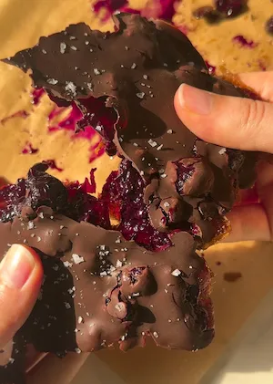

Blueberry Chocolate Date Bark (medjool dates, homemade blueberry jam, dark chocolate shell)
if you've made my viral no bake blueberry chocolate bars, this recipe will be right up ur alley. i took the same flavours from my favourite no bake bars but turned it into date bark form. there is something about blueberry and chocolate together that is oh so dreamy, maybe because it's often overlooked in favour of the classic strawberry and chocolate combo, but i fear this might be even yummier. we have soft and chewy medjool dates pressed into a flat base, a layer of homemade blueberry jam, and a dark chocolate shell on top sprinkled with flaky sea salt.
and then the best part is you get to break it all up once it's set. the tartness of the blueberries in the jam and the slight bitterness of the dark chocolate work so well together, and the dates underneath add a natural caramel sweetness that ties everything together without any added sugar anywhere in the recipe. it really is the perfect combination, and i was shocked at how simple it was to make. the assembly is easy with no need for perfection.
the homemade jam is the part that makes a real difference here, and it's actually really simple to make. all you need is frozen blueberries, a little water, some arrowroot powder, and a stove. homemade jam is one of those things that sounds way more labour intensive and time consuming than it really is. i promise once you make it and see how easy it is, you'll be hooked.
the reason i wouldn't reach for store bought jam in this recipe is that it's sweetened, often heavily, and against the natural sweetness of the medjool dates it tips the whole thing into being way too sweet to enjoy properly. the homemade version isn't sweetened at all, although you can add a splash of maple syrup if your blueberries are very tart. i find that even with bitter blueberries, any tartness gets balanced out by the dates and the dark chocolate. it's one of those flavour combinations that just complements itself. the best part is this blueberry chocolate date bark takes less than 30 minutes and the freezer does the rest of the work for you.
the medjool date base is what makes this a bark rather than a bar or a stuffed date. pressing them flat onto a lined tray, sandwiched between two sheets of baking paper, is the easiest method i've found. then use your fingers to patch any gaps and stick them together into a solid layer. once frozen with the jam and chocolate on top, they hold together well enough to break into pieces. dates are naturally high in fibre, which slows the absorption of their natural sugars and gives them a lower glycemic response than refined sugar. they're also a source of potassium and antioxidants, including phenolic compounds that have anti-inflammatory properties. combined with the blueberries and dark chocolate, this dessert is basically an anti-inflammatory powerhouse.
the dark chocolate is non-negotiable and i'd steer you away from white chocolate here. white chocolate against the sweetness of both the dates and the blueberry jam tastes sickly sweet. it tips the whole thing into sugar overload territory real quick. i use dark chocolate at 70%, which brings a slight bitterness that balances everything out and adds to the anti-inflammatory side of things. cacao is one of the richest food sources of flavonoids, which have been studied for their effects on cardiovascular health, mood and even brain health, specifically their role in supporting BDNF (brain-derived neurotrophic factor), which is involved in the growth and maintenance of brain cells. the coconut oil mixed into the chocolate before melting just helps it set with a bit of shine and makes it easier to spread.
blueberries are one of the most antioxidant-dense fruits available. they're rich in anthocyanins (the pigment compounds responsible for their deep blue-purple colour), which have been well studied for their anti-inflammatory, brain health and cardiovascular benefits. frozen blueberries work perfectly for the jam and retain most of their nutritional value through the cooking process. so between the blueberries, the cacao and the dates, this bark has a really solid nutritional profile underneath the fact that it just tastes like a great dessert lol.
a few notes on the method: when making the jam, you want the blueberries bubbling and releasing their juices, but once it hits a light boil, lower it to a simmer. this helps the jam reduce properly and keeps some shape in the blueberries, which adds a nice bite to the bark. the jam needs to be thick enough to spread without running off the sides of the date layer. if it's still quite loose after 10 minutes of simmering and the arrowroot powder, keep it on the heat until it thickens up, or stir in a small extra amount of arrowroot. spoon it over the dates, top with the melted dark chocolate, then transfer to the freezer or fridge until the chocolate is set.
if you love dates in your sweet treats, you have to try my viral air fried cookie dough stuffed dates and the brownie version too!
store in an airtight container in the freezer for up to 2 weeks, or in the fridge for up to 5 days. it needs to stay cold to hold its shape since the date layer softens quickly at room temperature. serve straight from the freezer for the best texture, with a nice snap to the chocolate and a firm date layer underneath.
Frequently Asked Questions
How do I store this blueberry chocolate date bark?
Store in an airtight container in the freezer for up to 2 weeks or in the fridge for up to 5 days. The bark needs to stay cold to hold its shape since the date layer softens quickly at room temperature. Serve straight from the freezer for the best texture, the chocolate will have a nice snap and the date layer stays firm.
Can I use store bought jam instead of making my own?
I'd really recommend against it. Store bought jam is sweetened and often quite heavily so, and against the natural sweetness of medjool dates it makes the whole bark too sweet to enjoy properly. Store bought jam also has a different texture to the homemade version and you'll miss out on the blueberry chunks that add extra bite throughout. The homemade version is unsweetened, which means the tartness of the blueberries balances beautifully against the dates and dark chocolate, and it takes less than 20 minutes and is honestly the star of the recipe. If you really can't make the jam, a layer of fresh or frozen blueberries pressed directly over the date base works as a shortcut, though you won't get the same jammy quality that the cooked version gives you.
What can I substitute for arrowroot powder?
Cornstarch and tapioca starch both work as direct substitutes in the same quantity. Chia seeds are another option and a good one if you want extra fibre and binding, just note that chia gives the jam a slightly different texture with small seed-like pieces throughout rather than a completely smooth set. Whichever you use, add it gradually and stir well before deciding if you need more. If the jam ever gets too thick just add a splash of water and mix.
What if my homemade blueberry jam is too runny?
Two fixes: either keep it on the heat on a low simmer for a few more minutes to reduce further, or stir in a small extra amount of arrowroot powder, a quarter teaspoon at a time, until it thickens to a spreadable consistency. The jam should hold its shape when you spread it rather than running off the sides of the date layer. Let it cool before spreading too, because jam always thickens slightly as it cools.
Can I use fresh blueberries instead of frozen?
Yes, fresh blueberries work just as well for the jam. The method is exactly the same. Frozen are just convenient here because they're available year round and tend to be more affordable than fresh, and their nutritional content is comparable since they're frozen at peak ripeness.
Why dark chocolate and not white chocolate?
White chocolate would make this bark too sweet. The dates are already naturally very sweet and the blueberry jam, even unsweetened, has a jammy sweetness to it once cooked. White chocolate on top of both would tip the whole thing into being one-note and cloying. Dark chocolate at 70% and above brings a slight bitterness that balances the sweetness of the dates and the tartness of the blueberry jam really well. It's also where the extra anti-inflammatory flavonoids in this recipe come from.
Are medjool dates healthy?
Medjool dates are a whole food sweetener which means they come with fibre, potassium and antioxidants alongside their natural sugars. The fibre content slows the absorption of those sugars, which gives dates a lower glycemic response than refined sugar. They're not a free food and they are naturally high in sugar, but as a sweetener in a no-bake recipe they're a much more nutritious option than white sugar or corn syrup, and they're what keeps this bark completely refined sugar free, alongside opting for a refined sugar free dark chocolate.
How many pieces does this blueberry chocolate date bark make?
Since it's bark, it really depends on how you break it. The recipe makes more than enough for roughly 4 generous portions but you can break it into smaller pieces if you're sharing or serving it as part of a dessert spread, there's no wrong answer here lol. I find it pretty indulgent so if it's just me eating it, there are enough servings to last me a few days.
Pro Tips
- Let the jam reduce properly and don't rush it. It should be thick enough to hold its shape when you spread it rather than running off the date layer.
- Press the dates together really firmly when forming the base.
- Use dark chocolate instead of white or milk chocolate.
Blueberry Chocolate Date Bark

Ingredients
Instructions
- Step 1: Add the frozen blueberries and water to a small saucepan over medium heat. Cook for around 10 minutes until the blueberries are bubbling and beginning to release their juices.
- Step 2: Reduce to a low simmer. You can mash the blueberries lightly for a better texture.
- Step 3: Stir in the arrowroot powder until fully combined. Add a small splash of water if the jam becomes too thick. Remove from the heat and leave to cool completely.
- Step 4: While the jam cools, pit the medjool dates and press them flat onto a lined baking tray. Place another sheet of baking paper on top and use a rolling pin to flatten the dates, then remove the top sheet of baking paper.
- Step 5: Use your fingers to press the dates together into a solid, even base layer and patch any gaps.
- Step 6: Spread the cooled jam evenly over the date base.
- Step 7: Melt the dark chocolate and coconut oil together using the double boiler method until smooth. Drizzle or spread over the jam layer.
- Step 8: Freeze for 1 to 2 hours until fully set.
- Step 9: Break into pieces and enjoy!
did you make this recipe?
snap a pic & tag @yourwellnessgirly so i can see! i'd love to hear how it went, share ur thoughts and leave a star rating!
Nutrition Facts
Per one serving:
*Nutritional information is estimated and will vary depending on the ingredients and brands you use. Basic macros don't reflect the full nutritional value including vitamins, minerals, antioxidants, and other beneficial compounds. Please use this as a guideline only.
Reviews
Be the first to leave a review
Leave a review
Thanks for your review! It's now live. 💗
No reviews yet — be the first!